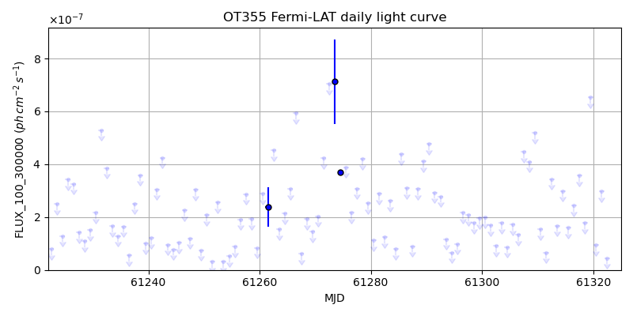
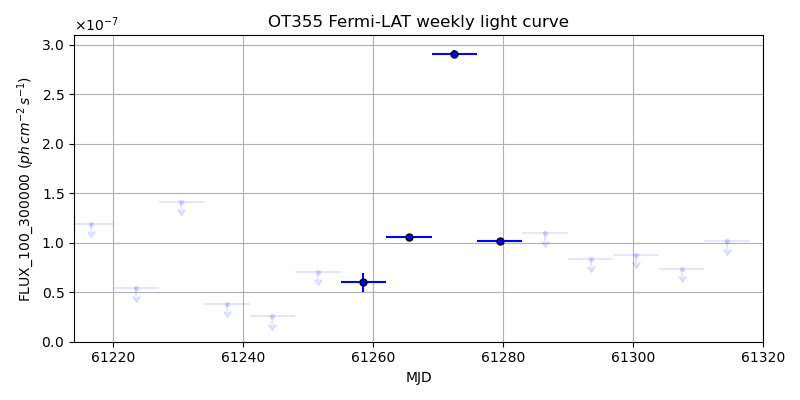
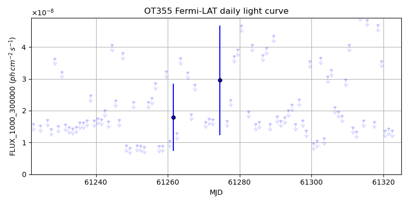
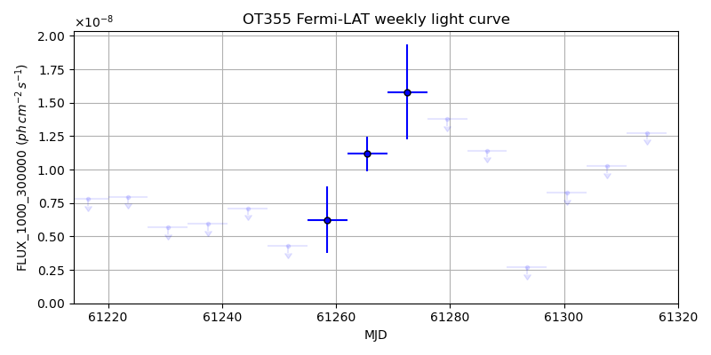

LAT Lightcurve site: https://fermi.gsfc.nasa.gov/ssc/data/access/lat/msl_lc/source/OT_355
NED: Query
Time of last update of this page: UT: 2026-10-10 15:24 (MJD: 61323.642)
| Property | Value |
|---|---|
| R.A. | 17:34:20.64 |
| Dec. | 38:57:50.4 |
| z | 0.970 |
| 3FGL SpectrumType | |
| 3FGL PL Index | -1.00 |
| 3FGL Flux_100_300000 | -1.00e+00 |
| 3FGL Flux_1000_300000 | -1.00e+00 |
| 3FGL Flux >200 GeV | -1.00e+00 |
| 3FGL Extrap. Crab >200 GeV | -1.00 |
| 3FGL Flux After EBL Absorption >200GeV | -1.00e+00 |
| 3FGL EBL Crab Fraction >200GeV | -1.00 |

| MJD | dMJD | Flux | dFlux | Frac3FGL | FracCrab>200GeV | EBLFracCrab>200GeV |
|---|---|---|---|---|---|---|
| 61318.50 | 0.50 | 1.77e-07 | 0.00e+00 | 0.00 | 0.00 | -0.00 |
| 61319.50 | 0.50 | 6.52e-07 | 0.00e+00 | 0.00 | 0.00 | -0.00 |
| 61320.50 | 0.50 | 9.43e-08 | 0.00e+00 | 0.00 | 0.00 | -0.00 |
| 61321.50 | 0.50 | 2.98e-07 | 0.00e+00 | 0.00 | 0.00 | -0.00 |
| 61322.50 | 0.50 | 4.46e-08 | 0.00e+00 | 0.00 | 0.00 | -0.00 |

| MJD | dMJD | Flux | dFlux | Frac3FGL | FracCrab>200GeV | EBLFracCrab>200GeV |
|---|---|---|---|---|---|---|
| 61286.50 | 3.50 | 1.10e-07 | 0.00e+00 | 0.00 | 0.00 | -0.00 |
| 61293.50 | 3.50 | 8.38e-08 | 0.00e+00 | 0.00 | 0.00 | -0.00 |
| 61300.50 | 3.50 | 8.79e-08 | 0.00e+00 | 0.00 | 0.00 | -0.00 |
| 61307.50 | 3.50 | 7.38e-08 | 0.00e+00 | 0.00 | 0.00 | -0.00 |
| 61314.50 | 3.50 | 1.01e-07 | 0.00e+00 | 0.00 | 0.00 | -0.00 |

| MJD | dMJD | Flux | dFlux | Frac3FGL | FracCrab>200GeV | EBLFracCrab>200GeV |
|---|---|---|---|---|---|---|
| 61318.50 | 0.50 | 4.69e-08 | 0.00e+00 | 0.00 | 0.00 | -0.00 |
| 61319.50 | 0.50 | 3.56e-08 | 0.00e+00 | 0.00 | 0.00 | -0.00 |
| 61320.50 | 0.50 | 1.38e-08 | 0.00e+00 | 0.00 | 0.00 | -0.00 |
| 61321.50 | 0.50 | 1.43e-08 | 0.00e+00 | 0.00 | 0.00 | -0.00 |
| 61322.50 | 0.50 | 1.37e-08 | 0.00e+00 | 0.00 | 0.00 | -0.00 |

| MJD | dMJD | Flux | dFlux | Frac3FGL | FracCrab>200GeV | EBLFracCrab>200GeV |
|---|---|---|---|---|---|---|
| 61286.50 | 3.50 | 1.14e-08 | 0.00e+00 | 0.00 | 0.00 | -0.00 |
| 61293.50 | 3.50 | 2.69e-09 | 0.00e+00 | 0.00 | 0.00 | -0.00 |
| 61300.50 | 3.50 | 8.28e-09 | 0.00e+00 | 0.00 | 0.00 | -0.00 |
| 61307.50 | 3.50 | 1.03e-08 | 0.00e+00 | 0.00 | 0.00 | -0.00 |
| 61314.50 | 3.50 | 1.28e-08 | 0.00e+00 | 0.00 | 0.00 | -0.00 |
--------------------------------------------------------- Using user-supplied coords: 17:34:20.64 38:57:50.4 2000 --------------------------------------------------------- FLWO UT night of: 2026-10-11 Local Sid. @ Midnight: 00:55 Sunset (-15.0) (local, UT): 19:04 02:04 Sunrise (-15.0) (local, UT): 05:18 12:18 Moonrise (local, UT): Moonset (local, UT): Moon phase: 0.01 --------------------------------------------------------- AzTime LSID UT Obj_el Obj_az Mn_el Mn_az Sep. --------------------------------------------------------- 19:04 19:58 02:04 60.0 294.1 -16.1 264.2 79.8 19:34 20:29 02:34 54.2 294.0 -22.3 267.8 79.7 20:04 20:59 03:04 48.3 294.7 -28.5 271.5 79.6 20:34 21:29 03:34 42.5 295.9 -34.7 275.4 79.4 21:04 21:59 04:04 36.8 297.4 -40.8 279.7 79.3 21:34 22:29 04:34 31.2 299.3 -46.8 284.6 79.1 22:04 22:59 05:04 25.7 301.5 -52.7 290.5 79.0 22:34 23:29 05:34 20.3 304.0 -58.4 297.7 78.8 23:04 23:59 06:04 15.1 306.8 -63.6 307.3 78.6 23:34 00:29 06:34 10.1 309.9 -68.1 320.3 78.5 00:04 00:59 07:04 5.4 313.2 -71.3 338.2 78.3 00:34 01:29 07:34 1.1 317.0 -72.6 0.4 78.1 01:04 01:59 08:04 -2.1 321.0 -71.5 22.7 78.0 01:34 02:30 08:34 -7.3 325.5 -68.3 40.8 77.8 02:04 03:00 09:04 -10.7 330.3 -63.9 54.1 77.7 02:34 03:30 09:34 -13.6 335.5 -58.7 63.8 77.5 03:04 04:00 10:04 -16.0 341.0 -53.1 71.2 77.4 03:34 04:30 10:34 -17.8 346.8 -47.3 77.2 77.3 04:04 05:00 11:04 -18.9 352.9 -41.4 82.2 77.1 04:34 05:30 11:34 -19.4 359.0 -35.3 86.6 77.0 05:04 06:00 12:04 -19.1 5.2 -29.2 90.6 76.9 05:18 06:14 12:18 -18.8 8.0 -26.5 92.4 76.9 --------------------------------------------------------- Dark hours >55 deg.: 0.43 srcstart (UT): 2026-10-11 02:04 srcend (UT): 2026-10-11 02:29